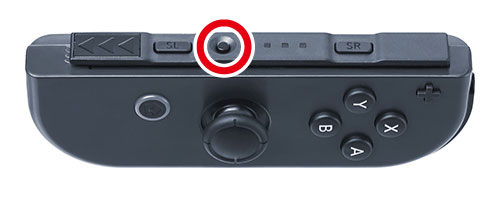

For information about this process, see the Guide to Setting Up the Environment (NX Add-On Controller Kit) in the NintendoSDK Documents for NX.
Pairing is performed by holding down the SYNC Button on the JOY-CON for one second, and then attaching the JOY-CON to the rail.
After waiting a while, release the rail and check the player LED.
When the pairing is completed, the player LED lights up in the pattern corresponding to the number of paired JOY-CON controllers.
(The player LED blinks during pairing.)

You must perform pairing for each of the JOY-CON units. Note that it is not possible to pair multiple JOY-CON units at the same time.
When pairing the JOY-CON for the first time, you must perform the pairing operation twice, first with one controller and then with the other.
CONFIDENTIAL